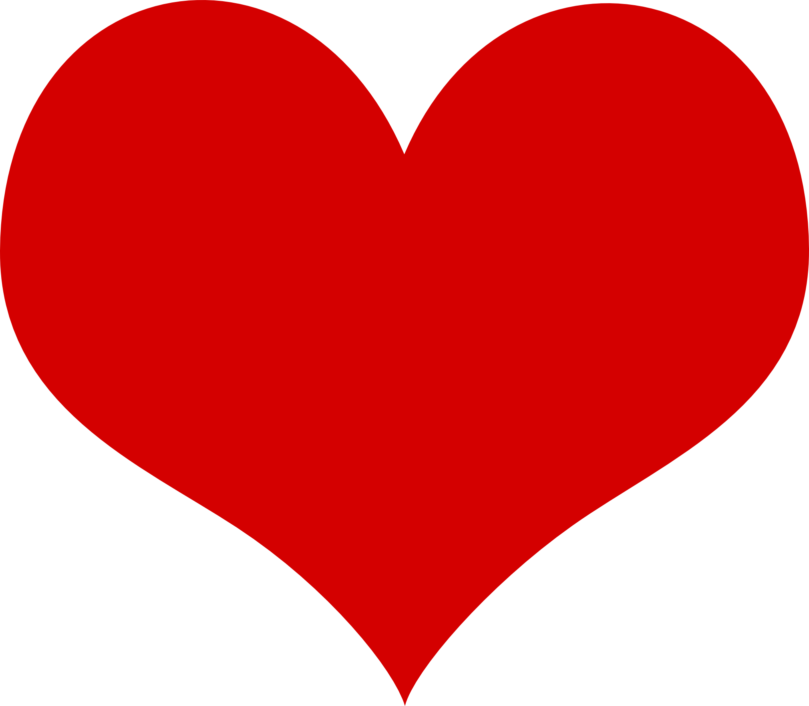

| Name: | Rauank Ravindra Singwi |
|---|---|
| Date of Birth : | December 25th, 1996 |
| Phone : | +91 94214 93219 |
| Email (Work) : | mail@raunaksingwi.me |
| Email (Personal) : | raunaksingwi7@gmail.com |
| GitHub Profile : | Click Here |
| CodeChef Profile : | Click Here |
| HackerRank Profile : | Click Here |
| LinkedIn Profile : | Click Here |
| YouTube Channel : | Click Here |
'Moodie and Foodie' defines me the best. Apart from eating, I love to code. Just the feeling to write something on my computer and the see something happen is amazingly pleasing. But if coding is my bread and butter, listning and reciting poetry is my desert. Apart from that, I love skateboarding and swimming.
Ramdeobaba College of Engineering, NagpurCurrent: Final Year |
Well, college is not what I assumed it to be. And definitely not what others told me about it ! All those, physics chemistry and mathematics classes in 1st year... I hated them ! I thought 2nd year will be where we dive into technology and start making software. How immature I was... I didn't want to learn most of the subjects ! I always wanted to be a software developer, a coder,a designer.... But yes, here I met genius people who guided me to become what I want to be. And yes, college have taught me a lot. It taught me, how to learn on your own. How to study the whole night to pass the exams next morning. How to do work with patience and dedication you don't like to do(writing journals and assignments). And the hostel life.... It taught me to adjust with everyone, quickly adopt the situations, how to work in a team, and much more. Hostel life is amazingly fun. |
|---|---|
Padhye Sir's Akash Education, AkolaThe Bad Times... |
I liked mathematics and science in school. I even managed to pass the entrance test for the JEE coaching classes at a reputed institute. But this time, the studies were overwhelming. A few days of carelessness and I was way behind the class. Academic depression ! I made a lot of mistakes there after. Bunked classes, didn't study. It was all miserable. I have learned a lot from my mistakes. I won't make such mistakes ever again. |
Dinbai High School, DigrasWonderland...The Awesome Times... |
This was probably the best time of my life. It was fun. Life seemed very simple. Living with family. All those friends, those memories... School really shaped my life. It helped me explore myself and identify my qualities and weaknesses. I was a good student at school. Good at academics as well as extra-curricular. |
| Programming Languages : | Python, Java, C, SQL. |
|---|---|
| Databases : | SQLite, Oracle Database. |
| Web Development : | HTML, CSS, jQuery (Basic knowledge), BootStrap. |
| Tools / Frameworks | Selenium WebDriver (Basic), Git/GitHub. |
| College Inquiry ChatBot | This is the project I am doing under persistent. This is a chatbot web-app which will answer engineering college related queries such as queries about admissions or placements. |
|---|---|
| Railway Ticket Booking Automation | I am writing a script that will automate the process of booking railway tickets from IRCTC website. The program will first ask for the passenger details and then wait for user input to start the process (as you need to wait till 11 am to book tatkal tickets).Specially useful for tatkal tickets where the time to book a ticket is really low and this automation can give you an edge and increase the chances of getting the taktal ticket. |
| Public Speaking and Debating | I am very confident in delivering speech in front of mass audience. I have won various awards in speech and debate competitions. |
|---|---|
| Team Player | I enjoy working with people as a team. I realized this by playing various sports and also organizing some co-curricular events. |
| Leadership | I believe that I have leadership qualities. I have found myself many time leading the team in the right direction with a solution centric approach. |
Made with  by Raunak Singwi